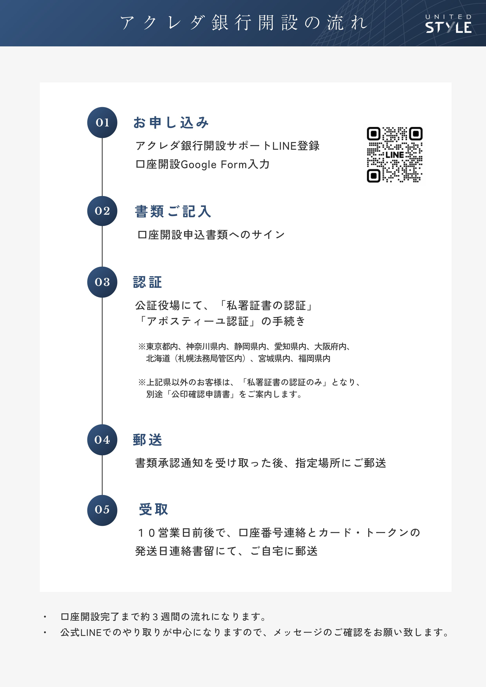

口座開設サポートのお手続きフロー
Google Formよりお申込→口座開設書類に自筆記入→公証手続き→郵送という流れになります。
※ご質問等のやり取りはLINEオフィシャル上にて対応させていただきます。

口座開設に必要な書類項目
アクレダ銀行の口座開設には、以下の書類が必要となります。ご準備いただく際にご不明な点があれば、お気軽にお問い合わせください。
【基本書類】
- パスポート: 顔写真ページと署名ページ。有効期限が6ヶ月以上あるもの。
- 公証済み口座開設書類（下記詳細）：
【口座開設書類】
-
Personal account opening application form
口座開設申込書：両面／全２枚 -
Payment Order Via E-mail/Fax Application form
遠隔手続きの申込書：片面／全１枚 -
Acknowledgement of ACLEDA Card, PayBand or/ and pin
暗証番号登録書：両面／全２枚 -
Special Terms and conditions for operating account with ACLEDA bank Plc.
口座開設に関する重要事項説明書：両面／全５枚 -
Certificate of Deposit form
定期預金口座開設申込：両面／全２枚 -
Request new passbook
通帳発行依頼書：片面／全１枚 -
Acleda retail internetbank Application form
個人用インターネットバンキングの申込書：片面／全１枚 -
Request form for Acleda digital services
デジタルサービスの申込書：片面／全１枚 -
Letter of Indemnity
免責承認書：片面／全１枚 -
Proxy Letter
委任状：片面／全１枚
**記入事項:** サイン(パスポートと同じサイン)
※免責承認書：Customer’s signatureの架線の上
※委任状：Account holder Signatureの架線の上